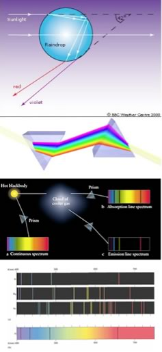

| Chapter 2.3: Exploring atomic organization using spectroscopy: |
|
As we will often see, there are times when an old observation suddenly fits into and helps clarify a new way of thinking about a problem or a process. A number of such observations were brought together in order to understand the behavior of electrons within atoms. The first has its roots in understanding the cause of rainbows. The scientific explanation of the rainbow is based on the fact that light of different wavelengths is bent through different angles (refracted) when it passes through an air-water interface. When sunlight passes through approximately spherical water droplets it is refracted at the air-water interface, partially reflected (note the difference) from the backside of the water droplet, and then refracted again as it leaves the droplet. The underlying fact that makes rainbows possible is that the light from the sun is composed of photons with an essentially continuous distribution of visible wavelengths. This was illustrated nicely by Isaac Newton, who used a pair of prisms to show that white light could be separated into light of many different colors by passing it through a prism and then recombined back into white light by passing it through a second prism; on the other hand, light of a single color remained that color, even after it passes through a second prism. |
2.1 Electrons & Orbitals |
When a dense body, like the sun or the filament of an incandescent light bulb, is heated, it emits light of many wavelengths - essentially all wavelengths in the visible range. However, when a sample of an element or mixture of elements is heated, for example in a gas flame, such as the ubiquitous "Bunsen Burner", it will emit light of only very particular colors (wavelengths). The different wavelengths (colors) present in emitted light can be separated from one another using a prism; when projected on a screen, these appear as distinct bright colored lines. This phenomenon provides a method by which elements can be identified - in fact, this is how helium, from the Greek meaning sun, was identified in the Sun before it was isolated on Earth. In a complementary manner, if white light (a continuous distribution of wavelengths of light) is passed through a cold gas made up of an element, these same wavelengths will be absorbed, while other wavelengths will pass through unaltered. We can see which wavelengths of light have been removed by passing the light through a prism; dark lines corresponding to the absorbed wavelengths will be apparent. |
How do we make sense of these observations? Perhaps the most important clue was the photoelectric effect - that is the observation that illuminating materials with light could lead to the ejection of electrons. This suggested that it was interactions between light and the electrons in atoms (rather than their nuclei) that was important. Perhaps it could be used to deduce details of the organization of electrons in atoms. |
 |
The second idea was that electrons can "jump" from one orbit to another – but this requires either the import (absorption) or export (emission) of energy, in the form of a photon. An electron can move between orbits only if a photon of exactly the "right" amount of energy is absorbed (lower to higher) or emitted (higher to lower). “Lower”, that is more stable, orbits are often visualized as being closer to the nucleus while “higher”, that is less stable and more energetic orbits, as further away. Only if enough energy were added in a single packet would the electron be removed completely from the atom, leaving a positively charged ion (an ion is an atom or molecule that has a different number of protons and electrons) and a “free” electron. Because the difference in energy between orbits was different in different types of atoms, photons carrying different amounts of energy (different wavelengths) were required to move electrons between different orbits. Bohr’s model worked well for hydrogen atoms, in fact he could account for, and accurately calculate the wavelengths for all of hydrogen’s observed emission/absorption lines. These calculations involved an integer “quantum number” that corresponded to the different energy levels of the orbits59. Unfortunately this model was not able to predict the emission/absorption spectrum for even the next element, helium, which has only two electrons, or for any other element, and certainly not for any general molecule. Apparently he was on the right track – since every element does have a unique spectrum and therefore electrons must be jumping from one energy level to another, but something important was missing from the model. |
For example, it was not at all clear what restricted electrons to specific energy levels, that is: what happens in atoms with more than one electron, where do those electrons go, and what governs their behavior and interactions? It is worth remembering that even though the Bohr model is often used as a visual representation of an atom, it is not correct. Electrons do not circle the nucleus in defined orbits, that is not how electrons behave! |
2.1
Electrons & Orbitals |
Question to answer:
Questions to ponder:
|
| 27-Jun-2012 |